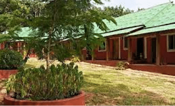

Gramya.org
In the rural areas, Gramya works for the well-being and rights
of the farming community, by addressing the crisis of farmer
suicides and assisting victims’ families. Their collective
efforts are helping thousands of distressed farmer families.
EndPoverty.org
Its main beneficiaries are poor, landless agricultural Indian
farmers, small and marginal farmers, traditional artisans,
stc.
dilasa.org
It advocates innovative and sustainable irrigation methods
to support agricultural development for tribal people and
small Indian farmers.

Find NGOs which helps farmers!